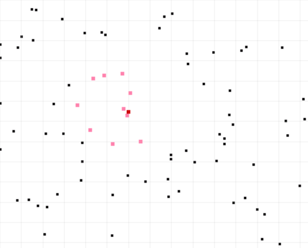

K-nearest neighbor
There are miscellaneous algorithms for searching nearest neighbors.
An alternative method is to use grid indexing strategy.
Slowly expand the grid boxes from the center to find the k-nearest neighbors.
The grid is used as a filtering mechanism to reduce the search space.
This works fast for distributed data across the space and is a good alternative algorithm for dynamic data that changes position frequently.
Reference links:
Project implemented in C# is available at Github:
A survey of techniques for fixed radius near neighbor searching:

The origin is in ring 0.
The origin can anywhere in the box and the distance to test on first iteration must be at least 1 x grid distance. The first iteration starts with data from ring 0 and 1.
The algorithm goes like this:
i = 0
Point origin
list currRing = empty
list nextRing = empty
list temp
while all rings not explored
i = i + 1
temp = empty
for all point in nextRing test distance between origin and point
if distance is within i * grid put it in currRing
else put it in temp
nextRing = empty
Add all from temp to nextRing
temp = empty
if(i==1) temp = points from ring 0 and ring 1
else temp = points from ring i
For all point in temp test distance between origin and point
if distance is within i * grid put it in currRing
else put it in nextRing
If there are at least k points in currRing then exit while loop
end while loop
if currRing count is < k then add all from nextRing to currRing
sort currRing by distance
take first k from currRing

Grid version algorithm:
Apply algorithm described above.
Searching: O(n * m) where m is grid cells and k << n.
Naive version algorithm:
For origin point check the distance to every other point.
Take k first items sorted by distance.
Searching: O(n log n)